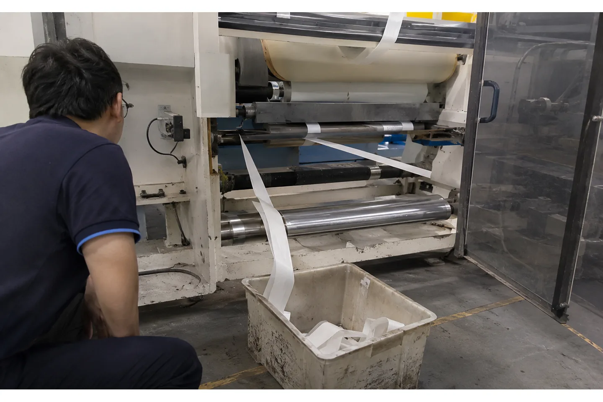

Published August 18, 2026 | By HDPTH Technical Editorial Team

A broken web can create a quality problem, a tangled machine and a safety event in a few seconds. On a slitter rewinder, the moving material may be under tension, the rewind shafts may still carry torque and the web path can contain multiple nip points. A web-break detector is therefore part of the control and safeguarding architecture, not a decorative sensor on the frame.
Procurement teams should define the event in operational terms: what must be detected, how quickly, which drives stop, what remains energised, what the operator sees and how the line is re-threaded. The right answer differs for opaque paper, transparent film, fibrous nonwoven and perforated material.
Define what counts as a web break
A full break is obvious, but the machine may also need to respond to a slack loop, a web running out, a strip missing after slitting, a web edge leaving the sensor or a roll reaching its programmed end. Do not combine all events under one vague alarm. Each condition can require a different response and should be named in the HMI.
State whether the detector must protect the entire web or each slit lane. A single sensor near the unwind can detect a parent-web break but may not identify a missing strip after the knives. Conversely, too many sensors can create false trips if they are placed where dust, flutter, perforation or transparent film confuses the measurement. The requirement should be tied to the failure modes that matter in your process.
Select the detection principle for the material
Sensor choice depends on opacity, surface, speed, width and the amount of web motion at the detection point. Optical sensors can be effective for opaque materials but may need a different arrangement for clear film. Mechanical or roller-based detection sees contact and may not suit delicate or contaminated webs. A drive or tension signal can provide an indirect indication, but it should not be treated as a substitute for a physical web-presence check in every application.
Ask the supplier to test the proposed sensor on the actual material, including the thinnest and most transparent grade. Include static, dust, perforations, splices and normal flutter in the trial. The supplier should specify the detection gap, response delay, sensitivity adjustment, cleaning method and whether the sensor is duplicated at a critical zone.
Map the stop sequence before the purchase order
When the detector changes state, the machine needs an intentional sequence. The web may be cut or released, driven rollers may decelerate at different rates, and the rewind torque may need to drop without allowing a heavy roll to coast into a nip. The exact sequence is machine-specific, so ask for a written description or cause-and-effect table.
- Identify which unwind, pull, slitting and rewind drives receive the stop command.
- Define whether the stop is a controlled deceleration or an emergency stop.
- Specify what happens to pneumatic pressure, brakes, nip rollers and stored web.
- Show the alarm, event timestamp and operator acknowledgement.
- Define the reset conditions before any drive can restart.
General machine guarding requirements such as protecting point-of-operation hazards and ingoing nip points should be incorporated into the design, not added after commissioning.

Integrate detection with tension and guiding
A break may be caused by excessive tension, a misaligned edge, a damaged knife, a splice, a wrinkle or a weak material area. The detector should stop the line, but the diagnostic screen should help the operator find the initiating condition. Trend tension, speed, guide position and the active recipe when the event occurs.
On a line with an electronic web guide, distinguish an edge-guide alarm from a web-break alarm. A web that has moved laterally is not necessarily broken. On a line with a web inspection camera, distinguish a material defect from loss of web presence. Clear naming reduces unnecessary blade changes and makes remote technical support more effective.
Write the RFQ around false trips and recovery
Buyers often focus on response speed and forget false-trip tolerance. A detector that stops the line whenever a perforation or flutter passes the sensing point can cost more than it saves. State the acceptable detection delay, the minimum stable web speed, the conditions that must not cause a trip and the required manual override procedure.
Define the recovery workflow: safe access, roll isolation, removal of scrap, threading, sensor check, tension reset, recipe confirmation and a low-speed restart. If the line handles multiple materials, include separate sensor settings. Ask for a spare sensor recommendation, connector and cable protection, cleaning instructions and a backup of the relevant PLC parameters.
Need a web-break response that operators can trust?
Send material, speed, web path and the failure events you want detected. HDPTH can help define the sensor and stop sequence before the controls are frozen.
Discuss your project with HDPTHFAT test cases for web-break detection
FAT should include controlled tests for a parent-web break, a missing strip if relevant, end-of-roll detection, a sensor disconnect, a false-trip challenge and a normal splice or perforation. Use the buyer’s materials at representative speeds. Measure the time from the defined event to the machine’s stable stopped state and inspect the resulting roll and web path.
Then test reset and restart. Confirm that the machine cannot restart simply because the sensor sees web again; the operator should complete the prescribed checks. Verify that the alarm identifies the correct zone and that the event is recorded. Include the final sensor locations, response settings, drive stop parameters and cause-and-effect table in the FAT package.
Installation, safety and operator training
Sensor alignment can change during shipment or after a roller is cleaned. Provide mechanical references, cable protection and a calibration or functional-check routine. Guarding must still allow safe threading and maintenance. Use the site-preparation checklist to plan access, utilities, floor layout and safe material handling before the equipment arrives.
Train operators on the difference between a web-break reset and an emergency stop. Show them how to isolate the roll, remove scrap without reaching into moving zones, inspect the sensor and perform a controlled low-speed restart. A clear one-page recovery chart at the HMI is often more useful than a long manual that is not available at the machine.
How HDPTH should scope the function
HDPTH’s converting equipment is specified around the material, roll dimensions, speed and operating sequence. When requesting a high-speed slitting machine or nonwoven rewinding machine, list the web-break events that the line must detect and the response you expect. Include any upstream or downstream signals that must be exchanged.
Ask for a functional diagram, sensor data sheet, alarm list and FAT script as part of the project documentation. That evidence gives production, maintenance and safety teams the same understanding of the system before installation.
Turn the requirement into an RFQ line item
Before comparing quotations for slitter rewinder web break detection: a buyer’s specification guide, put the operating requirement in a form that two suppliers can price and test in the same way. State the material family and its full working range, the parent-roll condition, the finished-roll drawing, the core, the number of lanes, the target speed and the changeover pattern. If the job includes more than one substrate, list each substrate separately instead of using a single average value.
- Define the quality result the plant must accept, such as edge condition, roll profile, web presence, winding stability or commissioning evidence.
- List the measurement method, sample size, inspection locations, conditioning time and who signs the result.
- Ask for the relevant tooling, sensor, tension, guiding, drive and guarding details in the supplier response.
- Require a FAT trial on representative material and a clear method for repeating the setup after cleaning, transport or a material change.
This structure helps procurement compare like with like and gives production, maintenance and quality teams a shared handover record. It also makes later troubleshooting faster: the team can see whether a result changed because of the material, the recipe, the measurement method or the machine. A concise requirement sheet is usually more valuable than a long list of headline specifications with no acceptance method.
Buyer FAQs
What should web-break detection do on a slitter rewinder?
It should detect the defined loss or abnormal movement of the web, command the correct controlled stop, display the cause, protect against unsafe restart and guide the operator through recovery.
Can one sensor detect every web-break condition?
Not always. A parent-web sensor may not identify a missing slit lane or a downstream strip break. The number and location of sensors should follow the line’s failure modes.
Will an optical sensor work on clear film?
It may, but the optical arrangement and background must be validated on the actual film. Transparent, glossy, static-charged or fluttering material can require a different sensing method or location.
How do I test web-break detection at FAT?
Simulate defined break, missing-strip, end-of-roll, sensor-fault and normal-process cases at representative speeds. Check response time, drive sequence, alarm wording, reset interlocks and restart behavior.
Is web-break detection a safety device?
It is a process-protection function. It must be integrated with the machine’s safeguarding and emergency-stop system, but it should not be assumed to replace legally required guards, interlocks or risk assessment.
Sources
- Vallis Technologies: slitter rewinder with web-break detection and tension control
- Lemorau: slitter-rewinder control functions including paper-break detection
- eCFR: 29 CFR 1910.212 general machine guarding requirements
Specify the response, not just the sensor
Share your material range, line speed, safety requirements and restart procedure with HDPTH. A complete web-break specification improves both FAT and overseas commissioning.
Send an RFQ to HDPTH